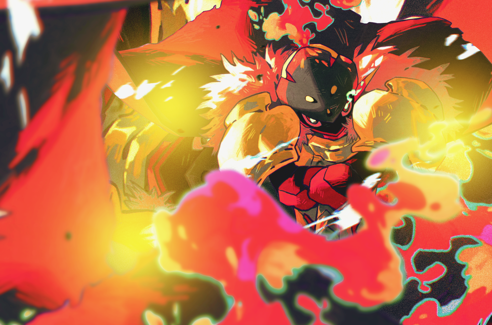

Il est possible de modifier l'apparence physique (le feat) de son personnage en cours de RP. Cette possibilité est offerte aux joueurs mais doit rester exceptionnelle : elle n'a pas vocation à être utilisée à répétition ou par simple lassitude esthétique.
Le monde d'Aetherion étant à l'origine un jeu vidéo dans lequel les joueurs se retrouvent piégés, il subsiste dans son code un logiciel de création de personnage, hérité de la phase de configuration initiale du jeu. Ce logiciel permet, en théorie, de modifier intégralement l'apparence d'un personnage - traits du visage, morphologie, couleur, etc. - de la même manière qu'à la création d'une partie.
Ce logiciel n'est ni accessible librement, ni sans risque : son usage reste lié à l'instabilité générale du code du monde, et peut nécessiter une mise en scène RP (accès à un terminal, bug exploité, intervention d'un tiers, etc.) selon ce que le joueur souhaite développer.
Ce logiciel ne permet de modifier que l'apparence physique. Il n'a aucun effet sur les statistiques, les capacités, l'historique ou la psychologie du personnage, qui restent inchangés.
Vérifie que ton nouveau feat est libre.